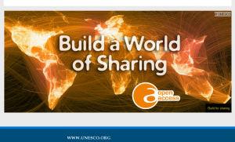

2014-05-17
編按：這是來自http://lucien.cc/?p=5959 轉載過來，跟大家分享。
本文之姓名標示：2014 林誠夏、黃郁文，採創用CC 姓名標示-4.0-國際版條款授權釋出。
---
林誠夏、黃郁文／編譯
政府運用人民稅金所進行的資料蒐集與公務舉措所附帶產生的素材與資料 (materials and data)，是否就只能直接收歸國有進行封存、之後再也無人聞問？或是另有一套機制可以讓民眾更彈性、豐富地利用它們！這是近年來許多開放源碼 (Open Source)、開放教育 (Open Education)、開放文化 (Open Culture)，以及開放資料 (Open Data) 領域都切切討論與鼓吹的改革議題。其實，經過這幾年的倡議與推動，國際上不乏正向導引的範例，例如：

▲ 圖1：聯合國教科文組織ー開放近用資源倉儲網站截圖 (Slogan – An Open Door to UNESCO Knowledge)
{kind=link}
- UNESCO 採用「創用CC IGO 授權條款」來建置「開放近用資源倉儲」
- 「開放近用資源倉儲 (Open Access Repository)」 是聯合國教科文組織 (United Nations Educational, Scientific and Cultural Organization, UNESCO) 轄下的一個專題計畫，其於 UNESCO 的資金浥注下，依循 2013 年 4 月律定「開放近用策略書 (Open Access Policy concerning UNESCO publications)」的規定，全面將 UNESCO 在 2013 年 7 月 31 日之後的出版品與相關資源，悉以開放公眾近用的授權方式釋出。在幾經考量之後，UNESCO 選用了「創用CC 姓名標示-相同方式分享 3.0 IGO (CC BY-SA 3.0 IGO)」 版本，為其預設的授權條款。一般讀者對於「創用CC 跨政府組織交流授權條款（Creative Commons Intergovernmental organization License，創用CC IGO 授權條款）」，應該沒有太深入的認識，這是因為 IGO 條款，為 Creative Commons 組織，方於 2013 年末，針對政府組織進行跨機構、跨國資源交流所新撰的創用CC 變形條款。此一變形條款的著眼點，在於跨政府組織 (intergovernmental organization) 彼此間的資源交流與共享，多不會以司法訴訟手段來進行權利的聲張與制裁，故在權利維護方面，新增了協調與仲裁機制 (mediation and arbitration) 先行的配置，也因為這樣的特殊配置，而受到了 UNESCO 授權決策單位的青睞。
- 美國 TAACCCT 專案 4 年內提撥 20 億美元的補助金來協助全國各地社區大學編撰創用CC 授權的職業進修課程
- 美國聯邦教育基金從 2011-2015 年間，規劃撥款 20 億美元來浥注各社區大學編撰與推廣職業進修課程，此一補助專案全稱為「職業調整協助ー社區大學與職訓課程提供計畫 (Trade Adjustment Assistance Community College and Career Training Grant Program, TAACCCT)。 TAACCCT 的大要是，從聯邦教育基金中提撥款項，補助各地社區大學因應人民職業轉換或第二專長學習的需求，來編撰適合的職訓與教學課程，並鼓勵社區大學在此基礎下能 開班授課，引導需要的美國民眾依其志向就近學習這些課程，以提高人民的就業率。然而，社區大學職訓課程申請此一補助金的前提是，其後產出的教材與相關資 源，必須皆以創用CC 姓名標示 3.0 條款的方式向外釋出，以能夠提供予公眾再行利用。
- 美國勞動部要求 1 億 5000 萬美元失業人口再就職輔導計畫成果皆須以「創用CC 姓名標示 4.0 授權條款」回歸予公眾
- 此 1 億 5000 萬美元的補助計畫， 是針對美國長期失業人口居高不下的問題，所進行的方案補助。預計是將總金額拆解為 20 到 30 的補助個案，受補助專案的服務內容，必須就個人諮詢、轉職訓練等支持性與專業性的職涯輔導工作著力，進一步要協助美國的長期失業人口，能經專案輔導之後結 束其待業狀態，並能進一步安插職位到原以 H-1B 專門人員簽證 (H-1B visa) 聘用外籍人士的美國企業裡，以達成美國人皆有機會於本國就業的目標。美國勞動部此一巨型的補助計畫，亦要求計畫執行過程中產生的各項教案與素材，皆須以 「創用CC 姓名標示 4.0 授權條款 (CC BY 4.0)」進行釋出，以能夠為公眾再行利用。
由於美國勞動部的補助計畫是在今年 (2014) 春季開始執行，時序上最新，故以下即重要節錄該補助計畫專案文件裡，關於「開放政策 (Open Policy)」所描述到的相關事項，以供讀者作為最新時勢的參考：
- 為了確保由聯邦政府撥補的這些資金，能在職訓教育素材發展的創新性上得到最大效益的應用，接受補助的單位，後續必須要將依靠補助金所產出的作品，除程式源碼 (Source Code) 是採自由軟體基金會 (Free Software Foundation, FSF) 或開放源碼促進會 (Open Source Initiative, OSI) 認可的開放式授權條款來向外釋出外，其他悉以「創用CC 姓名標示 4.0 國際版授權條款」提供予公眾來進行後續使用。所謂相關作品的範圍，包括接受補助資金之後編撰的新內容，或被補助單位接受補助資金之後，就其既有作品進行的修改或調整版本。
- 受補助單位以 CC BY 4.0 授權釋出的作品，後手使用者將得依其意進行重製、散布、公開傳送、以及改作等行為，然而使用者亦必須依受補助單位律定的方式，來善加表彰其顯名資訊 (attribution)。這些作品在被使用與散布時，必須夾附一份 CC BY 4.0 的授權聲明，來讓使用者得以知悉這個授權狀態。對於 CC BY 4.0 的基本資訊，可至 Creative Commons 的說明網頁進行閱讀，關於如何將受補助單位的作品以 CC BY 4.0 標示與散布的指示，亦可參照 Creative Commons 的共筆頁面。
- 對於 CC BY 4.0 授權模式的相關疑問，請參照補助計畫專案文件第 VII 章的說明，提報到美國勞動部業管此專案的聯繫窗口。
- 被要求須以 CC BY 4.0 授權釋出的作品，僅是受補助單位運用補助金來編撰與發展的作品。如個別作品是之前既已存在，或是受補助單位由第三方處購得，這些既定素材本身與其後續修 改，仍依其本來的智慧財產權運用模式即可。也就是說，非受補助單位支用本專案補助金來創作的相關作品，則並不會被要求須以 CC BY 4.0 的授權方式來進行提供。
- 之所以要求受補助單位採用 CC BY 4.0 來提供補助金產出的相關作品與素材，是希望這些透過公資金浥注的產出成果，都可以後續自由地被他人再利用與再改良。除此之外，美國勞動部也呼籲受補助單位 在可利用素材的購置與授權上，亦要遵守相關聯邦法令與規章，包括著作權法與其施行規則，以及聯邦職業復置法 (Federal Rehabilitation Act) 與其附屬條款的要求。
- 此外，透過補助金所發展或創作的電腦軟體程式，也必須採用在智慧財產權配置上，能容許他人使用並據以產生衍生程式的授權模式來散布。精確一點來說，本專案的受補助單位，須將受補助金浥注而產生的軟體程式源碼，以 FSF 或 OSI 認可的開放式授權條款來向外釋出。
- 除補助金相關作品須以 CC BY 4.0 授權模式提供予公眾的要求之外，美國聯邦政府並明示保留其「已償付、非專屬 (nonexclusive)、不可撤回 (irrevocable)」的被授權地位，其後因應聯邦政府的需求，將可對補助金浥注而產生的相關作品，進行重製、發行，以及其他目的之使用，必要時美 國聯邦政府亦得授權他人進行是類使用行為。這些作品的範圍包括補助金所及的各項產出，無論是受補助單位自行編撰或付費取得，包括但不限於：教育課程、職訓 範本、技術支援產品，以及其他相關的素材。
而其實，我國科技部 (Ministry of Science and Technology) 的前身國家科學委員會，也有類同 UNESCO 與美國教育部、勞動部等「取之於公眾、回歸於公眾」的「自由軟體暨雲端計算與資訊安全技術研發補助專案」，該補助專案由 2004 年開始執行並延續至今，提供國內研究機構，得以自由開源軟體研發主題申請研究補助資金之機會，而申請的前提要件，便是在日後於結案之時，所有研發成果與程式源碼，須以創用CC 授權條款及 OSI 認可之開放性授權條款來向公眾提供。此一舉措可說德不孤、必有鄰，然而對照國際上的發展趨勢，此種開放授權的補助政策，其實亦可以經研議影響層面之後，進一步擴散到各個以公資金浥注的政府施政裡！
畢竟，「取之於公眾、用之於公眾」，本就是政府施政的核心標桿，而當前民智已開，尤其是在資訊服務與文化創意領域裡，民間團體具有很高的動能與效 率，若能將政府公資金投注補助的相關專案成果，改採「取之於公眾、回歸於公眾」的模式進行開放釋出，無疑地能夠激發民間更多的創新能量，並進一步拓深這些 專案成果被善加利用的範圍與幅度。而為了提倡與推廣政府部門以公資金撥補的專案，皆能轉以更為開放的授權方式釋出，讓公眾能夠就這些作品與素材進行更緊密 程度的分享與交流，Creative Commons 亦於本年初 (2014)，成立了二個新進的推動專案ー「開放政策合作網絡 (Open Policy Network, OPN)」以及「開放領袖育成學院 (Institute for Open Leadership, IOL)」。依據 Timothy Vollmer 所撰寫的介紹文摘表 示，OPN 的設立目標，是要召集全球各地對於 Open Policy 推動有興趣的實踐者與倡議者，透過跨國合作、經驗分享的方式，彙整相關的資料與可行的作法，以進一步提供給認同 Open Policy 的機構與決策者，能據以參酌和落實相關舉措。而 IOL，則是要從種子推動員培育的立場來支持 Open Policy 的深根運作，Creative Commons 將透過 IOL 來訓練與培植此一領域的新興領袖，以確保 Open Policy 相關政策的推動，在範圍上能持續擴大，在參與上亦可世代接軌。看來，這股「取之於公眾、回歸於公眾」的 Open Policy 推動風氣，國際上才正是方興未艾，未來能夠解鎖多少政府資源，以更為激勵公眾創意與民間動能，非常值得觀察者進行後續的調查與研究。
參考資訊：
- 美國勞動部要求 1 億 5000 萬美金補助計畫的產出素材皆須以「創用CC-4.0-姓名標示 (CC-BY-4.0)」授權條款進行釋出
- 聯合國教科文組織採用創用CC 授權條款來設立「開放近用資源倉儲 (Open Access Repository)」
- UNESCO 2013 年 4 月所律定之「開放近用策略書 (Open Access Policy concerning UNESCO publication)
- 「創用CC 跨政府組織交流條款」共筆解說頁面 (Creative Commons IGO license Wiki)
- 美國聯邦教育基金從 2011-2015 年撥款 20 億美元來浥注各社區大學編撰與推廣職業進修課程ー申請補助金的前提是相關教材與產出資源必須以創用CC 姓名標示-3.0 條款來提供予公眾再利用
- 「自由軟體暨雲端計算與資訊安全技術研發補助專案」成果託管於 中央研究院 資訊科技創新研究中心 自由軟體鑄造場 OpenFoundry 平台上之搜尋結果列表
- 創用CC 新進推動專案介紹ー「開放政策合作網絡 (Open Policy Network)」以及「開放領袖育成學院 (Institute for Open Leadership)」